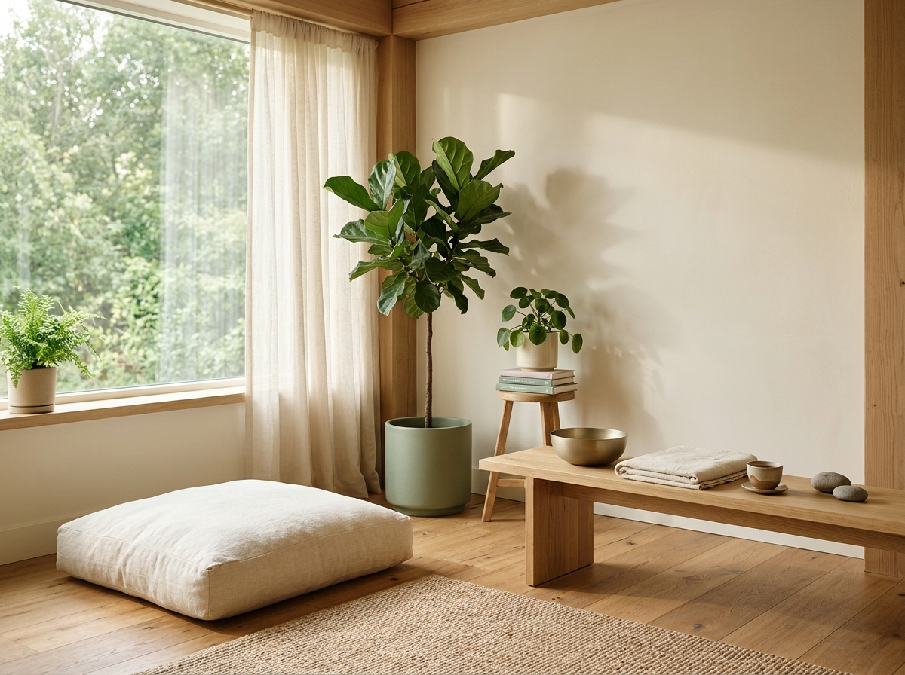

Honest boundaries
Complementary therapies are discussed for relaxation and personal wellbeing—never as a substitute for medical diagnosis or prescribed treatment.

Unhurried, transparent guidance on acupressure and complementary bodywork—without overstated promises.

Whether you are curious about reflexology or comparing gentle touch-based options, we believe good care starts with honesty.
Complementary therapies are discussed for relaxation and personal wellbeing—never as a substitute for medical diagnosis or prescribed treatment.
Every session begins with what to expect, what pressure feels like, and your freedom to pause, adjust or decline any technique at any moment.
Time is built in for questions before and after a session so decisions happen calmly rather than under sales pressure.
Many people explore acupressure or bodywork while already managing health routines with a doctor or physiotherapist. We encourage open communication with your healthcare team and help you check precautions before booking.
Read the safety guidePractitioners explain what a modality involves and where established medical assessment comes first.
Positioning, pressure level and room comfort are adjusted around your preferences and sensitivities.
New, severe or unexplained symptoms are always directed to a qualified medical professional.
Fresh linens, sanitised surfaces and verified single-use materials where applicable.
Relevant health context is discussed privately rather than through unsecured public forms.
Session length, fees and cancellation terms are confirmed directly before any booking.
No obligation to purchase multi-session packages or decide on the spot.